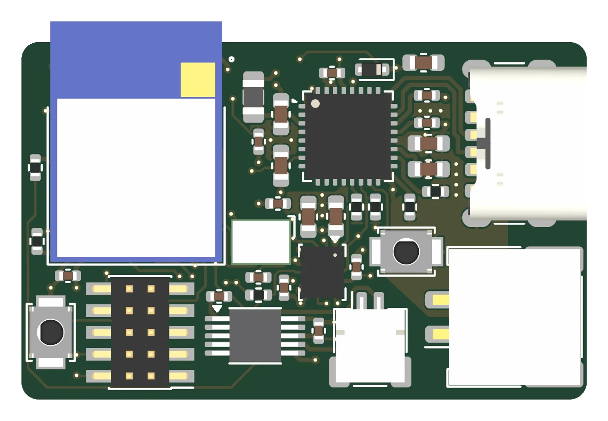
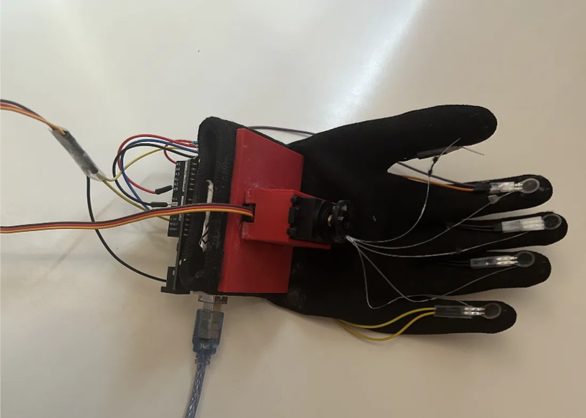
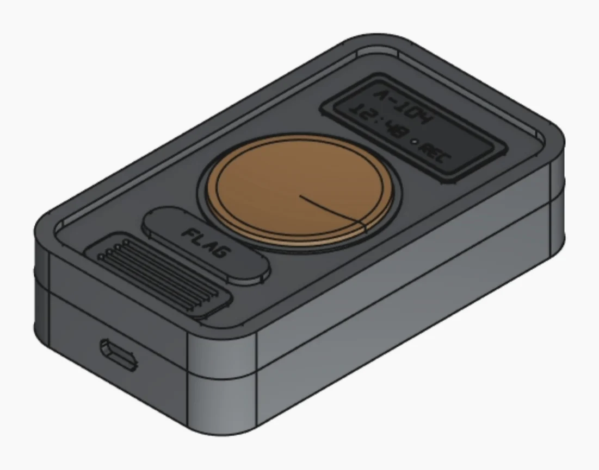

U1
Saylo
A necklace that helps kids hold on to what they learn in speech therapy. I designed the board inside it, from the schematic to getting it to boot.
2026 – now · heysaylo.com ↗


Studying Physics & CS at USC. I build small wearables that help people, from the circuit board to the firmware. Open to Summer 2027 hardware internships.
A necklace that helps kids hold on to what they learn in speech therapy. I designed the board inside it, from the schematic to getting it to boot.
2026 – now · heysaylo.com ↗

A $200 glove I built with a man who has weak grip after paralysis. We tested it every week for six months, and now he can hold a cup, open a jar and play his guitar.
2025 – 2026


A wrist wearable that picks up hand tremor and pushes back against it with a vibration motor. It cut tremor by 35%.
2025
Offshore technicians write their reports from memory after 12-hour shifts. This is a recorder they can use with gloves on, in the middle of the job.
2026 · GitHub ↗

A speech coach that sits behind your ear and taps you when you say "um." Saylo started here.
2026 · Try it ↗

Bring an idea or a 3D file, and Moko shows you how to make it and what it costs. Built in a weekend.
2026

Teaching a neural network to spot the tiny dip in starlight when a planet passes in front of its star.
2024

Hi, I'm Tanisha. I study physics and computer science at USC, with a minor in computational neuroscience.
Outside of building, I'm learning Carnatic music and I've danced ballet for ten years.
Los Angeles, from Singapore
Into PCB design, embedded systems, wearables and assistive tech
Open to Summer 2027 hardware internships